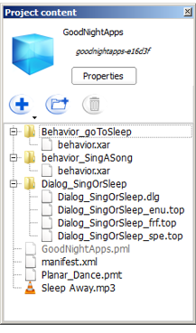

Project content panel¶
What is the Project content panel¶
- Edit the Manifest of the Application, through the Project Properties.
- Attach additional files to the current Project.
| Part | Description |
|---|---|
| A | Project icon. |
| B | Application title. Displayed in Choregraphe’s locale, or in English if the title does not exist in that locale. |
| C | Application ID. |
| D | Properties button. Click the Properties button to display and edit all the properties. For further details, see: Project Properties. |
| E | Files contained in the Project. For further details, see: Project files. |
Project Properties¶
To open the Project Properties:
- Choose File > Project properties.
You can also, in the Project content panel, click the Properties button or double-click the manifest.xml file.

The layout is organized from the most general view on the left, to the most specific one on the right.
| Part | Name | Allows you to ... |
|---|---|---|
| A | Package content |
|
| B | Properties | Select one property in order to edit it. |
| C | Edition zone | Modify the content of the selected property. |
| D | Displayed language menu | Browse from page to page when the Project supports several languages. Each translated property is available to edition in each supported language. |
| E | Buttons | Close the panel validating or cancelling the modifications. |
Project property list¶
| Property | Description |
|---|---|
| Supported languages | Allows you to choose the supported languages or to declare that the project is Language independent, i.e. does not require any language. Otherwise, at least one language is required. Any language checked will be enforced as a description language. |
| Description languages | Allows you to choose the languages in which the application will be described in a human-readable or robot-speakable way. Contains at least the Supported languages, but may contain additional languages. The selected languages appear in the Displayed language menu, in order to let you browse from one language to another. They also appear when a translated property is edited. |
| the icon | Allows you to select one Icon representing the Application. |
| Application title | Name of the Application, defined for each supported language. |
| Application ID | The Application Identifier. Chain of characters (50 characters max) among:
Example: fever-dance_redux Warning this ID must be unique in the Apps 2.0 Store. Unicity will be checked when you upload the package in the Apps 2.0 Store. |
| Application version | Allows you to set the three digits of the version number. The third one is automatically incremented each time the Application Package is built. |
| Application description | Description of the Application, defined for each supported language. This can be modified on the Apps 2.0 Store. |
| Robot requirements | Allows you to restrict which hardware configurations are supported by this Application. |
| NAOqi requirements | Allows you to restrict which NAOqi configurations are supported by this Application. Examples:
|
Behavior property list¶
| Property | Description |
|---|---|
| Name | Human-readable name of the Behavior, defined for each Description language. |
| Nature | Allows you to select the Behavior‘s Nature among a predefined list:
|
| Tags | Tags are unique words. If you enter multiple words separated by spaces in the widget, your input will be changed in as many tags as words. There is one tag list for each Description language. |
| Description | Description of the Behavior, defined for each Description language. |
| Trigger sentences | Allows you to define which sentences can be used to trigger the Behavior by voice through the default dialog activity, for each Description language. Design constrains: it will only work if the Behavior is an Activity, and if the owner of the Robot has subscribed to the Basic Channel. |
| Loading responses | Allows you to define, for each Description language, which sentence the robot will say while loading the Behavior before starting it. Design constrains: the sentence will be said only if the Behavior is an Interactive Activity. |
| Permissions | Allows you to define the permissions needed for the launching of the Behavior among a predefined list:
|
| Launch trigger condition | Allows you to define rules for an automatic launching of the Behavior. See Launch trigger conditions for more details on how to write these conditions. |
Dialog topic property list¶
| Name | Description |
|---|---|
| Topic Name | Name of the Dialog topic, read-only. |
| Topic Files | Allows you to select the Dialog topic‘s language files. It defines in which languages your Dialog topic is available. It is not recommended to edit those files. For further details, see: Dialog topic. |
Project files¶
Displays all the files contained in the current project and allows you to add, edit and delete files.
Toolbar¶
| Button | Click on this button to ... |
|---|---|
 |
Create or import items and files in the current Project. |
 |
Create a new folder. |
 |
Delete the selected file or folder. |
Double-click on file name to open and edit a file.
File types¶
| Type | Extension | Comment |
|---|---|---|
| – Project – | ||
| Manifest | .XML | Properties of the current project. |
| Project main file | .PML | Read only file. |
| – Items – | ||
| Behavior | .XAR | Each Behavior is stored in a folder containing a .XAR file. |
| Dialog | .DLG .TOP | The .DLG file contains the list of languages supported by the Dialog. Each .TOP file contains the QiChat script for the language specified before the extension: _enu, _frf, _jpj, ... |
| Planar Move Trajectory | .PMT | Used as parameter of a Motion > Move Along box. |
| Attached files | .WAV .OGG etc | The attached files can be any type of file. Example: a music used as parameter of a Audio > Sound > Play Sound box. For further details, see the tutorial: Using attached files. |
- Manifest
XML file gathering all the information required by the Apps 2.0 Store.
During the building of an application, the Project Properties are used to create the Manifest.